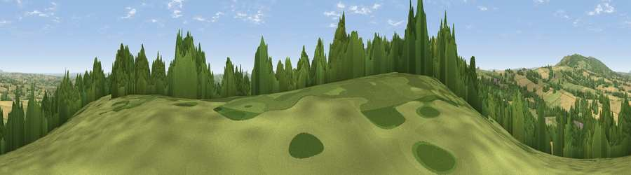

Viewpoint near Silvington
#13149 in England · top 31% of its area beats it · near SilvingtonThe view, rendered

A 360° render of this exact spot computed from the terrain model, tree cover and land cover — summer colours, afternoon light, calibrated against photographs of famous viewpoints. Real trees, hedges and buildings will differ in detail.
The panorama
Grey silhouette: terrain skyline in each direction (720 bearings, Earth curvature and refraction included). Dashed green: skyline with trees (+15 m) and buildings (+8 m) as obstacles. Blue strip: how far the ground is visible on each bearing.
Where the view opens
Wedge length = distance to the farthest visible ground on that bearing (vegetation-aware). Rings at 10, 25 and 50 km.
What fills the view
51% grassland · 25% woodland · 23% cropland ·
Angular shares of the visible panorama (visual magnitude), not map area. Landscape diversity 0.47 (0–1 Shannon).
Key numbers
More beautiful places nearby
The staircase of upgrades: each row has a higher view potential than everything closer. Driving times are estimates from straight-line distance, calibrated against real road routing — check an actual route before setting out.
| Place | Direction | Drive | Score |
|---|---|---|---|
| Magpie Hill | SW · 2 km | ~5 min | 75.7 |
| Viewpoint near Cleeton | WSW · 3 km | ~7 min | 78.1 |
| Titterstone Clee | WSW · 4 km | ~8 min | 83.8 |
| The Lawley | NW · 23 km | ~37 min | 85.8 |
| Viewpoint near Little Wenlock | N · 29 km | ~46 min | 86.6 |
| North Hill | SSE · 36 km | ~54 min | 86.8 |
| Worcestershire Beacon | SSE · 37 km | ~55 min | 87.1 |
| Viewpoint near West Quantoxhead | SSW · 146 km | ~169 min | 87.9 |
52.40839, -2.55085 · source: screening · position refined by local search. Computed location — check access rights before visiting.